Item text on this page is copied from the mod as it appears in game: the name, the power line in red, and the description in grey. Icons are the mod's own textures. Every recipe unlocks in the recipe book as soon as you pick up what it's made from.
Gear for every chapter
Since 1.60.0 each chapter has its own armour set, two weapons and four tools. They have a page of their own, with every recipe.
The Relay Core
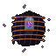
Relay Core
Tunes you in to them
What the relay's signal ran through.
Hold it to your ear: for thirty seconds every one of
the parasite's own shows through anything, a long way off.
From: the Amalgam at Relay 6, when it dies. Chapter: five.
Use: hold it to your ear and you're Tuned In for thirty seconds ("You tune in. Under the static, there they are."): every one of the parasite's own within 96 blocks shows through anything, violet. Then it needs a minute and a half to warm up again.
Why you need it: Tuned In, you can hurt the Afterimages at the Starlite Drive-In ("tuned in, they're as real as you are"), and it has to be on you to tune the projector for the last reel. First use earns Tuned In.
Related block: the Tether, the knot of sinew lashed to each of Relay 6's platforms, its veins lit.
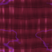
Tether
Break the one on each platform to cut the Amalgam off from the relay.
Compasses and needles
Civil Defence Compass
Civil Defence Compass
Its needle is set on Rosemont
Shelter No. 4. Left on the dais in Bunker B.
If the shelter falls, make for the city.
From: the locker the Watcher leaves on the dais in Bunker B after you kill the Warden of Shelter No. 4, with bread, torches and a golden apple. Points: at Rosemont, wherever you are. Added in 1.39.1.
The Watcher's Needles
From the Uplink Station on, whenever a new place wakes, the Watcher hands every player a needle: a compass that only ever points there. Its name is in dark purple and it never glints.
| Needle | Its line | Given when |
|---|---|---|
| Watcher's Needle (Uplink Station) | Where they talked to the gun. The array is there. | The Bloom changes |
| Watcher's Needle (Capacitor Works) | Still holding its charge. The cell is there. | The Bloom changes |
| Watcher's Needle (Soul Well) | Where they put the souls. The strongest is at the bottom. | The Bloom changes |
| Watcher's Needle (Ashford Nuclear Plant) | Its reactor never went cold. The core is in its heart. | The Orbital Railgun is built |
| Watcher's Needle (Meridian Laboratory) | Where they built what tears a charge loose. The destabilizer is there. | The Orbital Railgun is built |
| Watcher's Needle (Blackwater Station) | Out in the sea. Something got loose in it. The blood is there. | The Orbital Railgun is built (with an oak boat) |
| Watcher's Needle (Relay 6) | Where their static goes out from. Something holds on to the mast. | The Bloom is dead |
| Watcher's Needle (the Starlite) | Where the last of their static runs down to. A screen showing nothing. | Relay 6 is off the air |
| Watcher's Needle (The Hive) | Where it's growing itself a mind. The Chorus is down in the pit. | After the hive speaks (or when you walk into the hive first) |
| Watcher's Needle (The Sinkhole) | Where the ground was pulled down from underneath. It went down there. | Never handed out in 1.63.3: it exists only as a name. The Chorus Fragment is what leads you to the sinkhole. |
Every needle's power line reads "Points to one of the places that woke".
The Altar, Mansion and Gardens Needles
Since 1.63.2, three compasses you can make for the places you go back to. Use one and its needle swings round and settles on the nearest of its place ("The needle settles on the Forsaken Altar - 412 blocks north-east", for example); after that it points there wherever you go in the Overworld, until you use it again. With none anywhere near: "The needle spins and spins. There's none anywhere near." Anywhere but the Overworld: "The needle won't settle. What it's looking for is up in the Overworld." Their shared power line: Use it: it finds the nearest one, and points there.
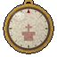
Altar Needle
Use it: it finds the nearest one, and points there
For the altars the old things were given to.
Recipe: a compass, a candle and a bone. Finds the nearest Forsaken Altar.
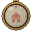
Mansion Needle
Use it: it finds the nearest one, and points there
For the house where it all went wrong.
Recipe: a compass, an iron sword and redstone. Finds the nearest Murder Mansion.
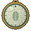
Gardens Needle
Use it: it finds the nearest one, and points there
For the glasshouses, and what grew in them.
Recipe: a compass, a glass pane and any small flower. Finds the nearest Botanic Gardens.
The README calls these the Forsaken Altar, Murder Mansion and Botanic Gardens Compasses; in game they're named as above. The Chorus Fragment works like a needle too: see below. And in the Dead Water, the Watcher's Chart is a map.
The power source parts
When the Bloom changes, the Watcher tells you there's a gun above the sky that needs a power source, and three places wake. A tracker along the top of your screen counts THE POWER SOURCE (0/3).
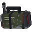
Targeting Array
SENTINEL's lock
Pulled out of the dish when the city fell.
It tells the gun where to look.
Where: the Uplink Station, in the locker in the control bunker by the consoles, with Lt. Okafor's duty log, bread, iron and two flashbangs. Infected operators, a sniper and a breacher hold the compound.
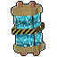
Capacitor Cell
Works cell 9, fully charged
Nobody came to collect it.
It holds what the gun needs to fire.
Where: the Capacitor Works, in the test cage at the back, past arcs jumping between the lightning rods. See the live banks.
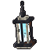
Bound Soul
The strongest soul in the well
Its keepers knelt by it for years.
It will hold the Watcher's darkness.
Where: the bottom of the Soul Well, thirty blocks down, on the altar where its keepers kneel (they get up when you come close; two of the Interred wait too). With bones, candles and echo shards.
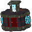
Orbital Core
SENTINEL's power source
The array, the cell and the soul, made one.
Set it on a Forsaken Altar.
Recipe: the Targeting Array, the Capacitor Cell and the Bound Soul, with iron and redstone. Set it on a Forsaken Altar and the Watcher comes and pours itself into it ("that's me. all of me that's left.").
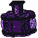
Infused Orbital Core
The Watcher is in it
It drinks the light round it.
Build the gun round it.
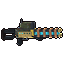
Orbital Railgun
Hold to lock on, release to fire (12s recharge)
It doesn't shoot. It tells SENTINEL where.
16 to 200 blocks, open sky only.
The only thing that can hurt the changed Bloom.
Recipe: the Infused Orbital Core, iron blocks, a copper block, lightning rods, iron and a spyglass.
Use: hold use and aim at the ground 16 to 200 blocks off, in the Overworld ("No uplink. There's no sky here for it to talk to." anywhere else). Its laser paints the spot, a ring locks on, the capacitors whine up for two and a half seconds: LOCKED - RELEASE TO FIRE. Let go and the slug comes out of the sky: sixty damage, fire and a shockwave out to twelve blocks.
The Ray Gun and the Omni
Building the Orbital Railgun wakes three more places. A tracker counts THE RAY GUN (0/3).
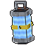
Nuclear Reactor Core
Out of Ashford's reactor
A fuel assembly. Its rods still glow.
One of the three things the Ray Gun's made of.
Where: Ashford Nuclear Plant, in the fuel pool. Don't go in the water without a suit; the decon lockers have one.
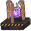
Discharge Destabilizer
Out of the Meridian lab
It can't hold what's in it for long.
One of the three things the Ray Gun's made of.
Where: Meridian Laboratory, in the glass cell in the middle of the ring ("mind the coils"), with redstone and amethyst.
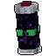
Vial of Dark Matter Blood
Out of Blackwater's sample freezer
It isn't a liquid. There are stars in it.
One of the three things the Ray Gun's made of.
Where: Blackwater Station, out at sea, in the freezer at the back. Parasites.
Ray Gun
Hold to aim, attack or let go to fire (2 min recharge)
The Orbital Railgun, rebuilt round what the Bloom brought.
24 blocks across, the whole height of the world.
The Watcher wants it.
Recipe: the Orbital Railgun and the three parts, or bring them all to a Forsaken Altar. After the Omni is taken back, the Watcher burns this recipe out of every book.
The Watcher turns the Ray Gun into the Omni Orbital Railgun.
The reactor's parts and the Rosemont Device
Each part is the only one there is: lose it and it goes back where you found it. The Rear and Front Assemblies won't go into anything but the Assembly Cradle; the Rear Assembly comes back a minute after it's lost (burnt, dropped in the void, left on the ground, shut away), and any copy crumbles in your hands. A tracker counts Reactor parts 0/3.
| Item | Its text | From |
|---|---|---|
| Rear Assembly | One of the reactor's three parts. Off the army's truck in Rosemont's plaza. Heavy: it slows you. | The Military Cradle in Rosemont (three axe blows) |
| Reactor Core | Lifted out of its rack at the bottom of the reactor pool. Hot. Everything infected wants it. | The Laboratory's reactor hall (wakes Specimen Zero) |
| Front Assembly | Out of Bunker B, under Shelter No. 4. Bulky: you can't sprint with it. | The dais in Bunker B (wakes the Warden) |
| Assembly Cradle | Holds the reactor's three parts. Set it down somewhere safe. The Rear Assembly goes in first, then the Core, then the Front. | Comes with the Front Assembly |
| The Rosemont Device | There is only one. While you carry it, the Flesh lets you pass. The Bloom does not. | Hold use on the full cradle for five seconds, or let the Watcher build it at a Forsaken Altar |
The parasite egg

Parasite Pod
The parasites' eggs. Their pods come up out of their black Xeno Resin and split open when you come near ("Pod splits open"); you'll hear them throb. Since 1.47.1 a pod is a round egg-sac, and split open it's a torn cup with its four flaps peeled back off the rim and the slime inside. Found at Blackwater Station and Relay 6.
There is also a Parasite Spawn Egg (and a Parasite Host Spawn Egg) in the creative tab.

Xeno Resin
The parasites' black resin, creeping over everything where they nest. Static Hounds sometimes drop it.
Chapter five

Surgical Kit
Cuts a parasite's brood out
Hold it to cut one out of yourself.
Use it on someone else to cut one out of them.
It hurts. You bleed. Four uses.
Recipe: shears, an iron ingot, string, paper and wool. Also in the Relay 6 operator's locker and sometimes in the Null ruins. Earns Cut It Out.

Frame of the Last Reel
What's left of an Afterimage
A frame of film, torn off at both ends.
In it, very small, someone standing in a field.
Feed four to the Starlite's projector.
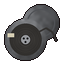
The Last Reel
Where they come from
The reel off the Starlite's projector, seen through.
A dented can with no label. The film inside is warm.
Keep it.
Held up to the light: "something vast, curled under the ground. An eye, opening." Hold it over the tear at the drive-in to open the way to the Null Static Zone.

Carrier Thread
What it carried them on
Pale, cold, and stronger than it looks.
There's a vein of light down the middle of it.
It isn't carrying anything now.
6 to 10 from the Carrier.
Music Disc
Static Hollow - Signing Off
Dropped by the Carrier.
Chapter five: the hive and the Deep
Parts five and six of Chapter Five: the Hive, where the Chorus grows itself a mind, and the Deep, where it goes to ground.
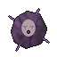
Chorus Fragment
Hold it to your ear: it whispers
A piece the Chorus left behind as it went down. It's still part of it, wherever it is.
From: the floor of the Chorus's pit when it runs, one for everyone. A knot of grey-violet flesh with a face in it the size of a thumbnail, its eyes shut, its mouth moving.
Use: hold it to your ear (every four seconds) and turn round. Facing the way the rest of it went, it whispers clear, and what it says tells you how far: "down. a long way down. far from here - that way.", "that way. under the hills. we can feel you coming.", "closer. we can hear you walking. we can hear your heart.", "here. right under you. come down. it's warm." Side on it's faint and broken ("...colder... no... turn..."); facing away, only static. Up top it leads you to the sinkhole (Warmer); down in the Deep it leads you to where the Chorus has gone to ground ("here. we are right here. we are finished growing."). With nothing to point at, it only mutters, things like "we remember the dark under the hills." and "every one we take remembers. every one remembers you."
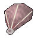
Listener's Ear
One of the Deep's older ones'
A fan of thin skin on rods of bone. It heard everything.
Stitched over boots, it makes your steps nothing.
From: Listeners, in the Deep. Also goes into the Usher's Shoes (see the chapter gear).

Hushed Boots
Your steps make no sound
Walk as quiet as sneaking: the Listener can't hear you,
and the Deaf King has to be close to feel you.
Recipe: leather boots, two Listener's Ears and string, in any order. Earns Not a Sound.

The King's Ear-Stones
So he wouldn't hear it singing
Two plugs of the old ones' stone, warm, a spiral in each.
Carry them and the Chorus's song
can't get into you either.
From: the Deaf King, when he dies and his crown cracks off. Anywhere in your inventory, they keep the song of the Chorus, whole, out of you in the last fight. Hold them to your ears and the world goes quiet a moment.
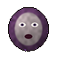
The Last Voice
The one voice it couldn't swallow
A face cut out of the Chorus, its eyes open now.
It isn't singing. It's trying to tell you something:
a door at the end of the world, and the seal on it.
From: the Chorus, whole, when it dies in the Warm Heart (The Last Voice). Hold it to your ear and it talks: "...there's a door. at the end. he sealed it...", "...take me to the end of the world. i'll open it for you...", "...the one in the black coat knows. ask him what he locked up...".
Why you need it: carry it into the End and it breaks the Watcher's seal, however you came by it (since 1.60.1): the End is open again, and the Door at the End of the World comes down. That starts Chapter Six.
Blocks

Hive Flesh
The parasite's violet flesh, veined, that the hive is grown of; it lines the Burrow and the Warm Heart too. The Hive Hands drop it and Hive Chitin when they die.
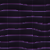
Hive Chitin
Its black braided spires and the ribs arching over the pit.

Nerve Node
The glowing bulbs on top of the four stalks round the pit, glowing and pulsing, cords of light running from them to the Chorus. Tear one open and it screams; tear all four for Senseless.
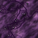
Biomass
The heap of violet flesh one of the turned leaves where it died (since 1.49.0), veined and pulsing, chitin forced out through it. It drags at you as you wade through it, and a minute or two later it heaves itself up into one of the parasite's pure forms, leaving its torn husk. Burn it and nothing gets up. See the turned.
In the Deep: The Throat (a ring of the hive's flesh, puckered shut: stand on it and it opens and takes you down, or back up), Deep Rock, Old Stone, Old Stone Bricks and Carved Old Stone (the pale worked stone of whoever was down there first), Bloom Root and Root Tendril (the Bloom's roots, gone deeper than anyone ever dug; the tendrils' ends glow) and Ember Cap (it glows like a coal on the cavern floors).
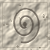
Carved Old Stone
The Deaf King drops three to six when he dies, with Bloom Root and diamonds.
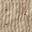
Bloom Root
Great roots hanging down through the roofs of the Root Hollows.
Chapter six: the Door at the End of the World
The Stalls, the Watcher's Vault and the Other Side. See Chapter Six.

Ticket Stub
ADMIT ONE
Soft old card, a seat number you can't read.
Show one to an Usher and it looks away a while.
From: some of the Audience, the Ushers, and the Crowd. Use: on an Usher: "The Usher tears your ticket in two, and looks away." For a minute its lamp doesn't see you. Also goes into Chapter Six's gear.
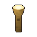
Usher's Lamp
Held, it lights the dark round you
Use it to flash: the Audience and the Ushers
caught in it reel, hands over their faces -
and the Crowd's Hush breaks. It needs a while to warm again.
From: an Usher, now and then. A brass torch-lamp, its glass yellowed, still warm. The flash takes eight seconds to warm again. Flash it at one of the Tuned in the Vault and its screen whites out: it can't move for four seconds, watched or not.
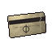
The Last Ticket
ADMIT ONE - THE VAULT
What was left in the middle of the Crowd.
It's warm. On the back, in a thin black hand: THE VAULT.
Hold it up to the seam in the screen.
From: the Crowd, one for everyone who was there. Held up to the seam the Watcher leaves in the Great Screen in Front Row, it tears in two in your hand and the seam opens for good (Admit One); after that, "The seam's open. Walk into it." Used anywhere else: "ADMIT ONE. On the back, in a thin black hand: THE VAULT."
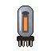
Vacuum Tube
Still warm
Out of one of the Tuned's sets. It glows a little, faintly orange.
Two of them, with glass and iron, make a set of your own.
From: some of the Tuned, and the Projectionist. Makes: two Old Sets (I G I / T R T / I I I: I iron ingot, G glass pane, T Vacuum Tube, R redstone), old televisions that hum, with static crawling on them; use one to switch it on or off. Also goes into the Tuning Fork and the Relay Staff.
What he kept
The three things in the Watcher's keeps, each on a plinth behind a round steel door. Bring all three to the Watch and the Projectionist steps down out of the sets (What He Kept). All three say KEPT FOR THE FUTURE and "Take it to him, in the Watch."
The Omni's Heart
KEPT FOR THE FUTURE
What made the Omni more than a gun: every colour at once,
turning, in a cage of its own light. He took it out of it.
Take it to him, in the Watch.
Later he loads it into his last projector against the Viewer (Every Colour at Once). See the Omni.

What's Left of the Carrier
KEPT FOR THE FUTURE
A knot of it, still beating. Static comes off it like heat.
It carried whatever was put on it. It held a door open.
Take it to him, in the Watch.
Take it and its static pours out: every Tuned near you is loose for a few seconds. See the Carrier.

His First Reel
KEPT FOR THE FUTURE
A film can, dented, the reel in it. On the lid, in his hand:
THE OTHER SIDE. FIRST. DO NOT RUN.
Take it to him, in the Watch.
Kept in a glass case. He runs it after the Projectionist burns through.
The Projectionist's Lens
Held: you see what's watching you
All that was left of it, in the ash: its lens, still warm.
Hold it and everything hostile near you shows through the walls,
outlined in its light.
From: the Projectionist, with three to five diamonds, two to four echo shards and two to four Vacuum Tubes.
Music Disc
Static Hollow - Thank You for Watching
Given to you after the last show, when the credits have rolled and you're sent home. See the soundtrack.
Blocks
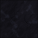
Seal-Stone
Black, his glyphs cut in it (Seal-Stone Glyph), a few still faintly lit: the causeway out to the Door, and the Door's frame. In it hums The Door's Static.
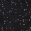
Stalls Asphalt
The Stalls' ground, under the Picture House Seats. Facing them, The Great Screen of Screen Cloth.
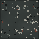
Vault Terrazzo
The dark, flecked floor of the Watcher's archive. Its keeps are The Watcher's Concrete (it doesn't break). Also: Archive Shelves (steel, cans of film and boxes of tape, labels in his hand), Old Sets, Cable, the keeps' Keep Door and Keep Wheel (use it: five seconds of the bolts drawing back, and the door swings in), What He Kept (the plinths) and The Watch Wall.
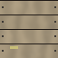
Stage Boards
The Other Side: Stage Boards, Stage Flats and Painted Flats (each a picture of somewhere from the story), Footlights, The Screen's Back, His Last Projector and the Black Static the Door goes to.
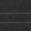
Black Static
What fills the Door at the End of the World once the first reel has been run: the dark on the far side of it, looking out.
Chapter seven: the First Signal

The Remote
An old television's remote, heavy, its buttons worn smooth, the one with nothing on it warm. The Watcher gives it to you after the Hub, and it earns Channel Changer. Press it: you're in the Hub. Press it in the Hub: home. Before it has anywhere to go: "You press the blank button. Nothing. Not yet."
In 1.59 he handed it over when you landed at home ("take this. if you need to go back - it's still there."). Since 1.62.0 the fall from the Hub goes to the Dead Water instead: he hands it over on the rig ("take this. it'll get you back - to the hub, and home.") and it cracks in your hand. See the Broken Remote. Mended, it does one more thing: "Press it: the Hub (and in the Hub, home). Crouch and press it: back to the rig."
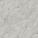
Hub Stone
The pale stone of the Hub's floating plaza, with Hub Stone Slabs.
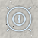
Hub Glyph
His marks, lit in the Hub's floor. Along its north side stand six Replay Portals, one for each chapter, each playing its chapter on an old set.
The Rerun Reels that replays leave behind are on Gear for every chapter.
Chapter eight: the Dead Water
The rig's stores are full of these. See Chapter Eight and the Dead Water.
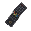
The Broken Remote
Dead - it broke in your hand in the Dead Water
Its case cracked across, its wires out, the warm button cold.
Mend it: this, a Static Leviathan's Signal Organ, a copper ingot.
(The big ones live deep. They sing on its frequency.)
Pressed: "It sparks. The warm button's cold. Nothing." Mend it: the Broken Remote, a Signal Organ and a copper ingot, in any order, give you back the Remote ("The Remote works again.").
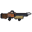
Harpoon Gun
Hold to pump, let go to fire - in water or out
Reels what it bites back to you - or you to it, if it's too big.
Strike a wall or the sea floor and it hauls you there. Crouch to let go.
Fire again while it's out to reel it in. Takes Harpoon Bolts.
Recipe: I I P / S C I / W . . (I iron ingot, P piston, S string, C copper ingot, W any planks). Also in the rig's armoury and its dive locker.
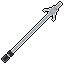
Harpoon Bolt
The Harpoon Gun's ammunition
Barbed steel, an eye for the cable. It comes back with the harpoon -
unless it snaps off in what it struck.
Recipe: . T . / . I . / . N . (T Needle Tooth, I iron ingot, N iron nugget) makes two. Also in the rig's armoury and dive locker.
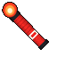
Marine Flare
Burns red for a minute - even underwater
Strike it and throw it. In the sea it sinks slowly,
lighting the dark on its way down.
Recipe: gunpowder, redstone, paper and red dye, in any order, make three. All over the rig's stores.
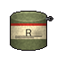
Rig Ration
A meal in a tin
Stamped R. The rig's larders are full of them.
Someone stocked this place a long time ago.
Recipe: dried kelp, bread, cooked cod and an iron nugget make two. In the mess, the food stores and the bunks.
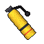
Air Tank
Underwater: use it to breathe - your air back to full
A diver's bottle off the rig's dive locker.
Good for a dozen breaths.
Recipe: . G . / I K I / I S I (G gold ingot, I iron ingot, K dried kelp block, S string). In the dive locker, the sub bay, sunken lifeboats and the flooded habitat dome. It can't be filled again.
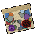
The Watcher's Chart
The Dead Water, every one of its waters
Use it to unroll it. The black hatched in red
is the dead zone. Don't take the sub over it.
The Watcher hands it to you when you come down to the Dead Water (since 1.63.2): four thousand blocks of sea round the rig, every water in its own colour and named, the floor's depths shaded and contoured, and the Black Below hatched out in red. Held, it's a map of the stretch you're in (a thousand blocks a square), with you as an arrow, the others with you, and the rig. Use it to unroll the whole chart: scroll to zoom, drag to look round, R to come back to you; point at a water for his notes on it (all of them are on Notes and books). A Map, a Glow Ink Sac and a Prismarine Shard make another.
Pressure Plating
Submarine Hull Plating
Crouch and use it on ORPHEUS: plated, it can go as deep as the sea goes
Recipe: B T B / H O H / B T B (B iron block, T Needle Tooth, H Shroud Hide, O obsidian). Also found in Sink Station and the wreck field. Without it the submarine is rated to 183 m.
What the deep things drop
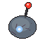
Signal Organ
From: the Static Leviathan (with bone blocks, Needle Teeth and a heart of the sea). In the Overworld it lives in the deepest oceans, the Hadal Dark and the Trench; in the Dead Water, now and then one comes up out of the dark after you once you're forty blocks or more under the surface (never in the Black Below, which is the Undertow's). It sings on the Remote's frequency, and its organ is what mends it.
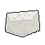
Shroud Hide
From: Shroud Rays and the Mouth of the Floor; also in the habitat dome and the frozen outpost. Goes into Pressure Plating.
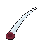
Needle Tooth
From: Needlemaws, the Static Leviathan and the Mouth of the Floor; also in the habitat dome and Sink Station. Goes into Harpoon Bolts and Pressure Plating.
The creatures themselves are in the bestiary, and the Undertow has a page of its own.
The sea's blocks and plants
Every water has its own floor: Ash Silt, Clotted Silt, Rust Silt, Glow Sand, Bone Sand, Brine Crust, Gum Silt, Spore Silt, Rime Silt, Ember Crust, Static Sand and Abyss Silt. Growing on them, waterlogged where they grow: Grey Kelp, Vein Kelp (it glows), Wireweed, Signal Bulbs, Glow Anemones, Lantern Bulbs, Bone Coral and Bone Fans, Marrow Sponge, Clot Coral, Artery Anemones, Sulfur Tubes, Brine pools, Enamel Coral, Tooth Fans, Gum Sponge, Nerve Anemones, Drowned Stems and Drowned Caps, Spore Puffs (they burst in your face), Gill Glow, Rime Ice, Frost Anemones, Frozen Corpses, Vent Chimneys, Tube Worms, Static Coral, Antenna Weed, Void Moss, Drowned Sets, Sea Lights and Eye Pods (shut till you come near; then the eye opens and follows you). The submarine's Sub Clamp is on the catwalk in the rig's sub bay: it charges and mends ORPHEUS, and builds another for 16 iron ingots and 8 glass.
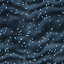
Glow Sand
One of the twelve floors.
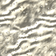
Bone Sand
The Ossuary Flats' floor.
Out in the world
Things that aren't tied to a chapter. The thirst and the cold they belong to are on Cold, thirst and the world.
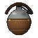
Canteen
Use on water to fill it - or hold it out in the rain: rainwater's clean
A dented tin flask in a stitched leather sleeve.
Someone's initials scratched into the cap.
Recipe: . S . / L I L / . L . (S string, L leather, I iron ingot). Filled from water it's a Murky Canteen: Drink: 5 sips - may leave you Tainted. Boil it (furnace, smoker, campfire) to clean it. Boiled, or filled in the rain, it's a Clean Canteen: Drink: 5 sips of good water - more thirst back, and it cools you. The sips left show as its bar; the last one leaves it empty.
Channel Zero
Point it at the ground and press it. Crouch and press it: the next channel.
CH 1 Falling Star - one star of the sky's static, on the spot.
CH 2 Starfall - nine smaller ones all round it.
CH 3 Dead Satellite - a dead satellite brought down, and its wreck.
CH 4 Test Card - the sky's test card, its bars burned in one by one.
Creative only for now (no recipe yet). A Falling Star leaves a crater lined with Static Stone and a Fallen Star glowing in it; Starfall drops nine small stars over four seconds; the Dead Satellite falls burning for five seconds and leaves a wreck and a satellite core's chest; the Test Card throws colour bars over the ground and burns each bar in turn. Craters only where the TNT game rule lets things blow up.
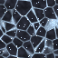
Fallen Star
At night shooting stars streak over the sky, and now and then a small one comes down somewhere near: a lump of glassy black rock, cracked all over, white-blue static crawling in the cracks, warm, lighting its crater. Mine it with a pickaxe for 2 to 4 Star Static (more with Fortune); Silk Touch keeps it whole.
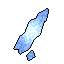
Star Static
Out of a Fallen Star
A splinter of the dead channel over the world.
It's still warm. It crackles if you hold it to your ear.
Also in a dead satellite's core.
Small things that share a block
Since 1.62.0, seven sets of little things that share one block space, one to four of a set, each turned to face whoever put it down. Place one on another to add a piece; break it and one piece comes off. You'll find them out in the Hollow's own country, on the deep sea floors, on the rig, in the cathedral's crypts and at the altar's pilgrim stones.
| Block | Its text | Recipe |
|---|---|---|
| Grave Candles | Tallow candles, a stub, a skull. Up to four in one space; light them. | A candle and a bone |
| Bone Pile | A skull, its jaw, bones. Up to four in one space. | Three bones |
| Rot Caps | The Blightwood's fungi. They glow a little, and breathe out spores. | A brown mushroom and Rotgrass make two |
| Hanging Chains | Hung from a ceiling: chains, a hook, a shackle, a weight. They creak. | Two iron chains |
| Rig Clutter | What's left lying about on the rig: a tin, an oil can, a wrench, bolts. | Two iron nuggets and a copper ingot make two |
| Cairn Stones | Flat stones, stacked by pilgrims. The top one is carved. At night something whispers. | Two cobblestone make two |
| Ritual Offerings | A bowl of ash, a straw doll, a red candle, dried herbs. | A candle, wheat, a clay ball and red dye |
The Hollow's own country
The five places on the Hollow's side of the world (see the Hollow's own country) have their own trees, plants and stone: Blightwood logs, leaves and saplings, Fen Willow logs, leaves and saplings with Willow Strands, Bonewood logs, needles and saplings, Deadwood, Peat, Hanging Rot, Rotgrass, Dead Heather, Wire Grass and Static Stone (it hums). Their logs make planks: Blightwood and Deadwood rotten planks, Fen Willow mangrove planks, Bonewood birch planks. Four Deadwood logs make three Deadwood.
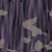
Blightwood Log
From the Blightwood: close, bruise-coloured, rot caps glowing.
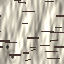
Bonewood Log
Pale and cold.
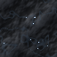
Static Stone
It hums. Fallen stars line their craters with it.
Survival and story items
| Item | What it does | From |
|---|---|---|
| Saint's Heart | A real heart, still beating. Goes into the Saint's Requiem. | The Hollow Saint |
| Saint's Shroud | Smithing template: upgrades Static Mail to the Saint's Vestments with a Hymnal Page. | The Hollow Saint (4 to 5) |
| The Mended Heart | Iron Will. Hold it up: three minutes of Resistance II, Strength I and Absorption II, then it has to beat itself warm again. | The Mended |
| Rusted Garden Key | Opens the Botanic Gardens' gate. "Something in there has waited a long time." | The Mended |
| Heartbloom | It still beats. Eat it: made whole, hardened, healing, and everything green round you flowers. | The Gardener |
| Drift Jelly | Slow Falling for 40 seconds and sight in the dark for 20. Eight iron nuggets round one make a Driftlight Lantern. | Driftlights in the Void |
| Lamprey Lure | Still lit. Hold it and it lights your way. | Lampreys (sometimes) |
| Bloom Serum | Cures the Flesh's infection and keeps it off you for twenty seconds. A glass bottle, a Bloom pustule and sugar; or a ghost orchid, a whispering lily and sugar. | Crafted; the Congregation, Specimen Zero |
| Flower Ash Bomb | Throw it: the Flesh's growth dies back where it bursts, and anything infected in it burns. A garden flower, a burnt petal and gunpowder make two. | Crafted; Specimen Zero |
| Tainted Meat | Fills you, and infects you. "Starving, it might be worth it. It usually isn't." | The Flesh's things |
| Flashbang | Blinds and deafens whatever can see it (you too); the infected caught in it stagger and lose you. | Special forces infected |
| Contaminated Syringe | From the corner pharmacy. "You wouldn't." | Infected Pharmacists |
| Bottle of Pills | Eat: Regeneration, and Nausea. "They help. Mostly." | Infected Pharmacists |
| Level 2 Keycard | Opens the Laboratory's security doors. | The director's desk; researchers |
| Audio Log | Play the tape, or put it in a tape recorder for everyone within about twenty blocks to hear. | The Laboratory |
| Fuel Canister | Diesel for the shelter's generators. | One of Shelter No. 4's lockers |
| Brood Heart | Brood Sight: the Flesh's things within 48 blocks show through walls for 30 seconds. 90 seconds to beat again. | The Broodmother |
| The Bellwether's Bell | Ring it: the infected within 16 blocks stop and listen for three seconds. Half a minute to ring again. | The Bellwether |
| Bloom Heartwood | Close-grained, pale, still warm. Green light runs in it like sap. | The Gardener, Reborn (3) |
| The Gardener's Seed | A hard black seed the size of a fist, split along one seam. Something in it breathes. | The Gardener, Reborn |
Weapons
Big, detailed 3D weapons, held like a sword. A fully charged swing (wait for the attack meter) triggers the weapon's power; the second act's weapons also have a power on use, with a ten-second cooldown. The first four weapons and every armour piece are unbreakable, and those four can break blocks slowly, like a sword. Since 1.61.0 every weapon swings its own way, and since 1.61.1 the Rending Claws, Brute Knuckles and Stalker Claws are worn on the hand (see the gloves). The fourteen chapter weapons added in 1.60.0 are on Gear for every chapter.
| Weapon | Power | What it does | Recipe (rows, top to bottom) |
|---|---|---|---|
| Sinew Cleaver | Rend | Each full swing opens the wound further: Bleeding I, II, III. | . S / T S / K .S Stitched Sinew, T Shepherd's Tear, K Hollow Knuckle |
| Antler Scythe | Reap | The swing carries on through everything in front of you. | A A A / . W . / . K .A Antler Shard, W Bloodied Wool, K Hollow Knuckle |
| Static Blade | Dead Air | Static arcs from your target to up to 3 more hostiles. | S / S / CS Static Shard, C Grave Claw |
| Saint's Requiem | Last Rites | The target burns; creepypastas take a third more damage. | . S . / R H R / . K .S Static Shard, R Rusted Lullaby Key, H Saint's Heart, K Hollow Knuckle |
| The Bunnyman's Fire Axe | Bridge Toll | Full swings cut through armour, break shields and stagger. Use: a chop that splits the ground open ahead of you. | I I S / I B . / S B .I iron ingot, S Bloodied Stuffing, B stick |
| Hook and Chain | Reel | Full swings gaff: they bleed and drag the target to you. Use: throw the hook; it hauls creatures in, or you to walls. | . H / . C / H BH Rusted Hook, C iron chain, B stick |
| The Hogshead's Tenderizer | Tenderize | Full swings make the target take more from all harm. Use: slam the ground, throwing everything round you upward. | F I F / . B . / . B .F Flayed Hide, I iron block, B stick |
| Porcelain Needle | Unseen | Strikes from behind cut deep and stitch the target slow. Use: vanish; your first strike from hiding is a killing one. | . . P / S P . / G . .P Porcelain Shard, S string, G gold ingot |
| Devil's Glaive | Hellfire | Longer reach; full swings set the target burning. Use: leap on devil's wings and come down in a ring of fire. | . . H / . B H / B . MH Devil's Horn, B blaze rod, M Moth Scale |
| Rending Claws | Frenzy | Each hit quickens the next; wounds bleed, and bleeding prey feeds you back. Use: pounce and rake three times. | F F F / L I LF Dogman's Fang, L leather, I iron ingot |
| The Gardener's Shears | Prune | Full swings snip twice; whatever is badly hurt is cut half again as hard. Use: a row of thorns toward what you face. | I . I / . B . / K . KI iron ingot, B iron block, K Knotted Root |
| The Bloomshears | Graft | Full swings snip twice and hit the Flesh's infected half again as hard. Use: three lines of thorned roots. | Dropped by the Gardener, Reborn |
| Brute Knuckles | Hurl | Full swings land like a falling wall. Use: lift the nearest thing and throw it eight blocks. | Three Brute Knuckles, an iron ingot, Splitter Sinew, leather |
| Stalker Claws | (held) | Walk into a wall to climb it; let go to slide down; crouch to hang. Falls off a wall don't hurt. | Two Stalker Talons, Splitter Sinew, leather |
Sinew Cleaver
Rend
Blood drips off its tip while you hold it.
Antler Scythe
Reap
It sheds bone ash.
Static Blade
Dead Air
Its screen crawls with static and spits sparks.
Saint's Requiem
Last Rites
Its heart beats (lub-dub) and gives off embers.
The Gardener's Shears
Prune
The Bloomshears
Graft
The hinge pulses green.
The Mended guns
Fabric only, with Timeless and Classics Guns: Zero (TaCZ), which the Fabric modpack installs. Three guns the Flesh grew into the special forces who carried them: the Mended SMG (its stock a forearm, an eye open in its side, a muzzle of five flesh petals; 30 rounds, full auto), the Mended Shotgun (a ribcage stock, a seed-pod magazine of 6 shells, a muzzle of teeth that chews when you look at it) and the Mended Marksman Rifle (a spine along the barrel, a thighbone stock, a finger for a bolt handle; 5 rounds). They fire infected rounds that put the Flesh into whatever they hit. Made at TaCZ's Gun Smith Table; special forces sometimes drop theirs. Once the Bloom is dead, they rot and jam over ten minutes off its blight.
Armour
Every set is a real 3D model that moves. Crafted in the usual armour shapes from a material M with one accent X. The seven chapter sets (the Vigil, the Scarecrow, the Bloomwoven, the Specimen, Dead Air, the Usher's Uniform and On Air) are on Gear for every chapter. Since 1.60.0 any creature head can be worn too (heads, worn).
| Set | Full-set power | Made from |
|---|---|---|
| Stitchskin | Sewn Shut: below half health your wounds slowly close, and you can't bleed at all. | Stitched Sinew, Hollow Knuckle |
| Antlerbone | Night Hunter: you run faster in the dark. | Antler Shard, Bloodied Wool |
| Static Mail | Dead Channel: creepypastas within 32 blocks glow through walls, and anything that hits you up close gets a jolt of static. The Dead Channel Helm also shows the static coming off the Hollowed. | Static Shard, Grave Claw |
| Saint's Vestments | Hollow Grace: creepypastas won't hunt you unless you hurt them. The Saint's Crown calms one that comes close. | Static Mail + Saint's Shroud + Hymnal Page, at a smithing table |
| Butcher's Garb | Slaughterhouse: your blows open bleeding wounds; every kill feeds you back. | Flayed Hide, porkchop, Rusted Hook, leather |
| Mothwing | Night Flight: fall and your wings catch you; in the dark you see like a moth. | Moth Scale, fermented spider eye, phantom membrane, leather |
| Braxton Shell | Braxton Mist: struck, you hiss out a burning mist that sickens what's near; the hood's lamp lights the dark. | Braxton Residue, glowstone, iron |
| The Gardener's Weeds | Tended: the great flower's flies won't have you (no Sapromyiophilous, and the Bloom's air doesn't eat you); what grows round you grows faster. | Knotted Root, hay block, leather, mud (or found in the glasshouse) |
| Hazmat Suit | Sealed: the reactor's radiation can't touch you, and the Flesh's bile, gas and spores get in half as much. | The Laboratory's airlock lockers |
Dead Channel Helm
A dead TV for a helmet, crawling with live static. Its antenna tips light green while a creepypasta is near, flash red when you're hit, and fade like a cooling bulb when the last one's gone.
Saint's Crown
When a creepypasta comes within about 14 blocks, a red orb kindles between its antlers and beats like a heart, a glitching signal. In the full set the creature stares a few seconds, then gives in, sighs white ash, and turns friendly.
Mutant parts and throwables
| Item | What it does | Recipe |
|---|---|---|
| Gut Bomb | Throw it: bursts like a Bloater on whatever is there, anything but you. | A Bloater Gland, gunpowder and string (makes two) |
| Screamer Lure | Throw it: it screams for twelve seconds and every infected within 48 blocks goes to it. | A Screamer Sac and Splitter Sinew |
| Fly Jar | Throw it: four Flesh Flies fight for you for twenty seconds. | Hive Comb, a glass bottle and Splitter Sinew |
The parts themselves: Stalker Talon, Bloater Gland, Screamer Sac, Brute Knuckle, Splitter Sinew and Hive Comb, each from its mutant.
Blocks
Story blocks
- Forsaken Altar and Breach Altar: wake with an empty hand.
- Hollow Reliquary and Head Pedestal: the Saint's summoning.
- Mending Altar and Trophy Pedestal: the Mended.
- The Binding: holds the Bloom down, until you touch it twice.
- Cathedral Cornerstone (creative): place it in open ground and right-click it to raise a cathedral there.
- Assembly Cradle, Military Cradle, Assembly Mount, Launch Mark: the Rosemont Device.
- Tape Recorder: a working cassette player. Coolant Lever, Keycard Reader, Diesel Generator, Overload Switch, Shelter Radio Set.
- Projector, Drive-In Screen, Null Static, Null Rift: the Starlite and the Zone.
- Hush Stone, Hush Seal, Listening Stone: the Null ruins.

Null Static
What the drive-in's ground has gone to (as the mod's source describes it).
Hush Stone
Pale and dead: knock on it and nothing rings.
The blocks of the hive, the Deep, the Stalls, the Vault, the Other Side, the Hub and the Dead Water are listed with their chapters above.
Building blocks
Hollow stone, hollow stone bricks (plain, cracked and bloodied), hollow brick stairs, slabs and walls, hollow tiles, hollow pillars, ossuary bricks, rotten planks (with Rotten Pews and slabs), cathedral glass (with its god rays), grave soil, gravestones, grave crosses and blood splatters. Breach stone and bricks, breach crystal and shards. Weathered clapboard, damask wallpaper, stained floorboards, slate shingles, grimy windows. Conservatory glass, overgrown iron, marble, planters, potting soil, garden flagstones and iron lattice. Shelter concrete, laboratory tiles and panels, steel grating, sandbags and wrecked cars. The radio mast, its top, antennas, aviation lights and guy-wire anchors (an anchor wires itself to the nearest mast). Blood is a real liquid: a bucket scoops it up.
The garden's plants: Bloodthorn, Gnashing Flytrap, Whispering Lily, Corpse Bloom, Ghost Orchid, Watching Fern, Strangler Vine, Lantern Pod, Burstpod, Clutchvine, Weeping Bell, and four kinds of Specimen Jar (eye, heart, hand, seed).